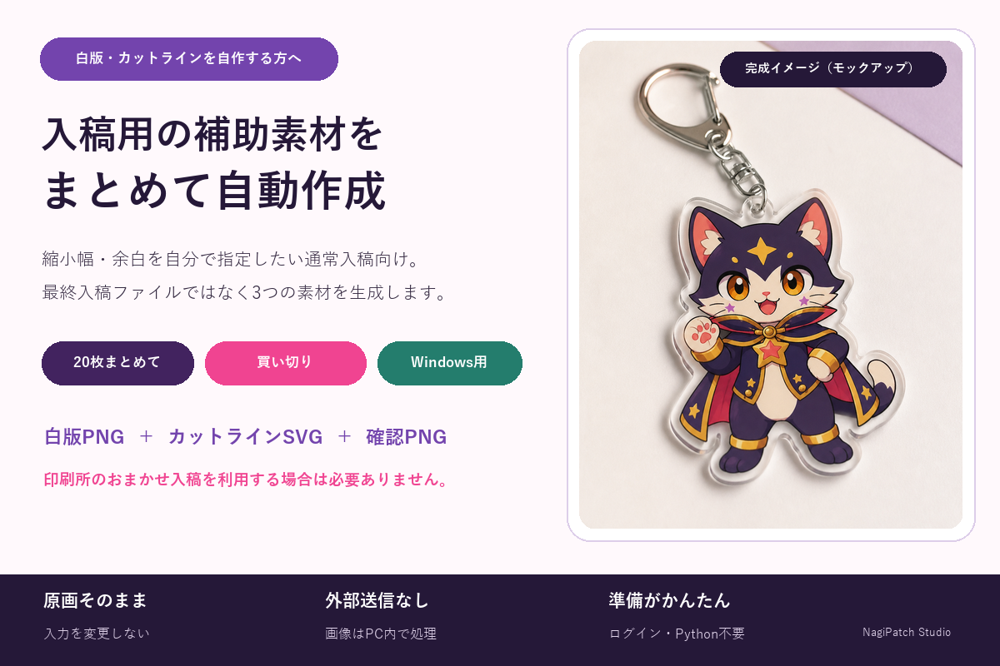

白版・カットライン素材作成
白版・カットラインを自分で用意する方向けに、透過PNGから3つの補助素材をまとめて作成します。印刷所のおまかせ入稿を使う方には不要です。
Windowsアプリを見る（480円）NAGIPATCH STUDIO
個人の創作・入稿作業と、ファイルを扱う前の確認を支援するWindowsツールです。

白版・カットラインを自分で用意する方向けに、透過PNGから3つの補助素材をまとめて作成します。印刷所のおまかせ入稿を使う方には不要です。
Windowsアプリを見る（480円）先頭ゼロ、長い番号、数式候補、列崩れを架空データで解説します。
解説を読む文字化け候補、危険パス、名前衝突、展開サイズを解説します。
解説を読む非表示シート、外部リンク、文書情報を確認する実務手順です。
Windowsアプリを見る（480円）通常の非表示との違いと、見落とさないための確認方法を説明します。
解説を読む